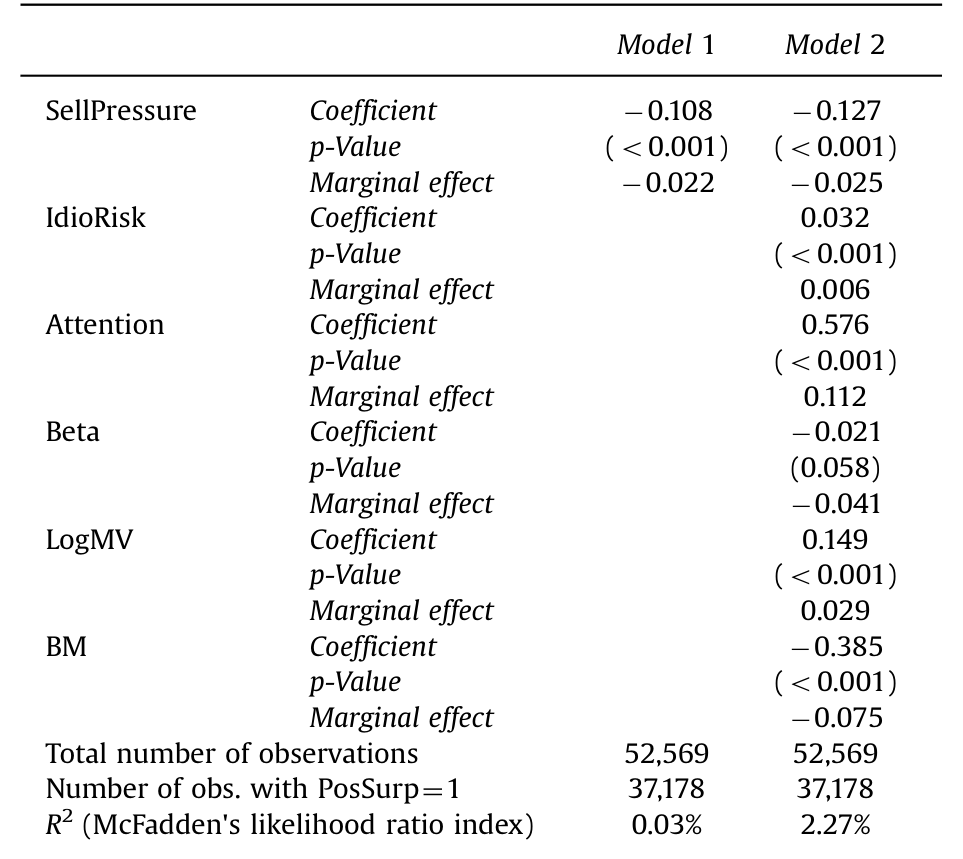
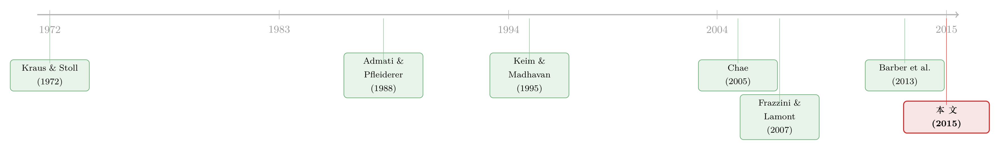

公告日那点「凭空」的正收益，原来是有人在低价甩货
本文读的是 Levi & Zhang (2015, Journal of Financial Economics)：盈余公告日上那笔人尽皆知的「平均正收益」，并不是对某种风险的补偿，而是一次流动性反转——公告前信息不对称走高，流动性交易者集体收手，但他们收手的方式是不对称的：砍买单远多于砍卖单，于是变成净卖方，把价格压出一个折扣，这个折扣在公告日反弹回来，就成了所谓的「盈余公告溢价」。
1 一个让人不太舒服的「免费午餐」
先说一个老掉牙、却始终没被讲清楚的事实：在公司发布盈余的那一天，股票的平均风险调整后收益是正的。
注意，这里说的是「平均」。你事先并不知道这家公司是要报喜还是报忧，可只要押注在公告日上、横跨成千上万次公告取平均，你拿到的就是一个稳定为正的收益。这就是文献里反复出现的盈余公告溢价 (earnings announcement premium)。它不大，单次也就几十个基点，但它顽固、可重复、几十年不消失——这恰恰是最让人不安的地方。一个有效的市场，凭什么在一个可预知的日子里，系统性地发钱给你？
学界给过几种答案。一种说，公告日特质风险 (idiosyncratic risk) 骤增，不持有分散组合的投资者要为此索取补偿 (Cohen, Dey, Lys & Sunder, 2007；Barber, De George, Lehavy & Trueman, 2013)。另一种偏行为，说公告吸引了投资者的注意力，交易量暴涨，注意力把价格往上顶 (Frazzini & Lamont, 2007)。还有一种说，是系统性风险——beta——在公告日变大了 (Savor & Wilson, 2015；关于这条「公告日 beta 更值钱」的线索，可参见《一年只有那么几天，beta 才真正值钱》）。
这些解释都把溢价当作某种「风险的价格」。Levi 和 Zhang 这篇文章却说：你们都找错了方向。这根本不是风险溢价，而是有人在公告前被迫低价卖货，价格被砸出一个坑，公告日只是这个坑自然回填的时刻。
2 被所有人忽略的那个「不对称」
要看懂这个反转，得先回到一个被研究透了的事实：在信息不对称高的日子里，流动性交易者会减少交易。
逻辑很直白。流动性交易者本身不掌握私有信息，他们一旦下场，就要面对那些确实掌握信息的对手盘，承受逆向选择的成本 (Admati & Pfleiderer, 1988；Foster & Viswanathan, 1990)。而盈余公告前的几天，正是信息不对称最高的时段 (Chae, 2005)。于是理性的流动性交易者会缩手——买也少买，卖也少卖。
到这一步,都是旧文献。接着，一个自然的问题是：买和卖，真的会同比例地一起缩吗？
这正是全文的命门。Levi 和 Zhang 指出：不会。卖出这件事，天然比买入更「急」。原因有二。
其一，可替代性不对称。如果你想增加对某个因子的敞口，交易成本太高时，你大可以去买另一只特征相似的股票绕开它；可如果你想减少敞口、又不做空，你就只能卖掉你手里正好持有的这只——别无选择。卖,是没有替身的。
其二,短卖约束。需要回笼现金的投资者,只能卖掉已有的持仓;他们不能靠「凭空做空」来回避一只交易成本高的股票。Keim 和 Madhavan (1995) 在拆解机构的下单行为时就发现,买单的执行时长明显长于卖单——买的时候从容,可以慢慢等低成本;卖的时候急,要的是即时性 (immediacy)。Campbell, Ramadorai & Schwartz (2009) 也发现机构卖出时支付的流动性成本高于买入,并把这种不对称归因于「不愿或不能做空」。
把这两点放进公告前的高成本时段,结论就出来了:当交易成本上升,流动性交易者会砍买单砍得比砍卖单更狠,从而变成净卖方。这就是本文的第一条假设:
H1:公告前,流动性买入的下降幅度大于流动性卖出。
净卖出会怎样?流动性压力带来价格反转 (Amihud & Mendelson, 1980;Ho & Stoll, 1981;Grossman & Miller, 1988)——卖出压低价格、随后反弹为正收益。于是第二、第三条假设顺理成章:
H2:公告前的净卖出,会带来比净买入更大的价格反转。 H3:公告前的净卖出,在特质风险、系统性风险、交易活跃度/投资者关注之外,独立地驱动了公告日的平均正收益。
一句话:溢价是流动性提供者赚走的钱。难点只剩一个——你怎么看见那些「流动性驱动」的买卖单?
3 识别策略:用「被动机构」当一台流动性显微镜
这是全文最讲究的一步。
直接的办法是用 TAQ 全样本交易数据,套 Lee 和 Ready (1991) 的算法去推断每一笔成交是买方发起还是卖方发起。作者确实这么做了。但这个算法是有噪声的——它能正确归类大多数交易,却并非全部 (Lee & Radhakrishna, 2000;Odders-White, 2000)。光靠它,「净卖出」这个核心变量就站不稳。
于是作者搬出了第二套、也是更关键的数据:Plexus。Plexus 是一家为机构提供交易咨询的公司,它的数据直接标明每一笔订单的方向和动机,而不需要你去「猜」。更妙的是,Plexus 里有一类被它明确归类为被动机构投资者 (passive institutional investors) 的客户——共 33 家,投资目标是复制某个指数或基准组合的收益。
为什么非要盯着「被动」这群人?因为他们近乎完美地扮演了「纯流动性交易者」的角色:
- 他们买卖股票,是因为基民申购赎回带来的现金流入流出,而不是因为他们对即将到来的盈余有什么独家判断;
- 作者实测了这群被动机构的市场模型,\(\alpha\) 在 5% 水平上与零无异、\(\beta\) 与一无异——它们确实只是在「跟住市场」,赚不到显著的超额收益;
- 被动机构通常不留现金垫,因为任何闲置资金都会造成跟踪误差。
换句话说,被动机构的买卖,几乎是「液体」的——没有信息动机,只有流动性需要。把他们在公告前后的下单行为放大来看,等于给「流动性交易」装了一台显微镜。Plexus 客户在样本期管理着超过 $1.5 trillion 的股票资产,触达约 25% 的美国市场成交量,样本覆盖 1996 年 1 月到 1998 年 3 月、共 4,480 次 NYSE 公司的季度盈余公告。
作者度量「净交易」的方式,简单得可以一行写完,但它是整篇文章的支点。对投资者 \(i\) 在第 \(t\) 日:
这个指标的好处是:它把规模洗掉了,只留下方向。负得越深,卖压越重。为了进一步把「公告前的异常行为」从日常波动里剥出来,作者再减去同一季度里第 $-70$ 到 $-16$ 日的平均净交易,得到「异常净交易」。买入和卖出也分别做了归一化处理:
$$\text{Purchases}_{sit}=\frac{\text{Buy order}_{sit}}{\sum_s \text{Buy order}_{sit}},\qquad \text{Sales}_{sit}=\frac{\text{Sell order}_{sit}}{\sum_s \text{Sell order}_{sit}}$$
即,某只股票 \(s\) 当日在投资者 \(i\) 总买入(总卖出)中占的比重。这样一来,「公告前他到底是少买了、还是少卖了」就一目了然。
4 主要结果:坑是怎么挖出来、又怎么填回去的
第一步,确认「公告前交易确实变少」。 被动机构的成交占当日总成交量的比例,在第 $-10$ 到 $-2$ 日平均是 9.5%,而在公告后第 2 到 10 日是 10.5%,差异在 1% 水平显著。公告前,大家确实在收手。
第二步,也是全文最关键的一步,确认这个收手是不对称的。 把异常净交易摊到每一天看,最显著的净卖出集中在公告前三天:第 $-3$、$-2$、$-1$ 日的净交易分别是 -6.1%(t = -3.57)、-6.8%(t = -3.90)、-6.5%(t = -3.88)。三天连续、显著为负。
那么,这个「净卖出」是少买出来的,还是多卖出来的?作者把买、卖拆开:第 $-10$ 到 $-1$ 日,异常买入平均为 -0.25%(t = -3.83),显著为负;异常卖出却只有 -0.05%(t = -0.64),与零无异。
结论干净利落:公告前的净卖出,几乎全部来自「少买」,而不是「多卖」。 这正是 H1。投资者把买股票的计划推迟到了公告之后——果然,在公告后第 0 到 10 日,异常买入的累计值比异常卖出高出 1.53%,恰好填回了公告前那段 1.99% 的「买入缺口」。
第三步,反转。 既然有人在公告前持续卖货,价格就该先被压低、再在公告日反弹。Table 1 的风险调整后收益正好画出了这条曲线:公告前的下跌段里,第 $-6$ 日 -0.08%(t = -2.38)、第 $-4$ 日 -0.07%(t = -2.11),价格随卖压一点点往下渗;然后到第 $-1$ 日骤然翻正为 0.16%(t = 4.54),公告当日第 0 日 0.21%(t = 3.97)。坑挖好了,公告日填回来——这就是溢价。
第四步,做对照,把「流动性」和「信息」彻底分开。 这是我最欣赏的一组检验。
其一,净卖出与消息好坏无关。公告前三天,坏消息前的净交易是 -6.4%(t = -2.84),好消息前是 -6.5%(t = -4.21),两者差异不显著。也就是说,被动机构在好消息前、坏消息前,卖得一样多——他们显然不是因为「偷看到了财报」才卖。更扎心的是,正文指出更高的公告前卖出,反而和负面消息的概率正相关。如果这群人真知道内情,他们该在坏消息前疯狂卖才对,可数据里没有这种择时。
其二,主动机构没有这个现象。作为安慰剂,作者拿 Plexus 里 26 家主动机构(3,165 次公告)做同样的计算:他们的异常买入 -0.13%(t = -1.08)、异常卖出 0.00%(t = 0.02),净交易在公告前任何一天都与零无异。净卖出是被动投资者独有的。 这恰好排除了「这只是某种知情交易」的解释——主动机构如果有信息,理应也动,可他们没动。
第五步,把「成本」这条因果链补上。 净卖出真的是被高企的交易成本逼出来的吗?作者按公告前三天预期买卖价差 (bid–ask spread) 的上升幅度,把股票分成三组(用市值、账面市值比、成交量预测价差变化,并用工具变量法 (instrumental variable, IV) 绕开「交易少→价差宽」的反向因果)。结果一目了然:预期价差升幅最低的一组,被动机构净交易仅 -1.88%(不显著);中间组 -6.95%(t = -2.93);最高组高达 -11.07%(t = -4.31);高减低的差是 -9.19%(t = -2.75),显著。预期成本越高的股票,被动机构净卖得越凶——而主动机构在这三组里看不出任何规律。成本,正是那只看不见的手。
最后,落到 H3:这股卖压能解释溢价本身吗? 作者把公告收益回归到「卖压」上,同时控制特质风险、系统性风险、交易活跃度。如表 5 所示,在压住这些既有解释之后,公告前的卖压依然是溢价的显著驱动;按正文的话说,它的效应「几乎相当于特质风险与交易活跃度两者之和」,是所有被考量因素里最显著的一个。这个结论在 1998–2001、2002–2005、2006–2009、2010–2012 四个子样本里都成立。

Table 5: presents the results of the estimation. Sell pres-
至此,故事闭环:信息不对称让流动性交易者收手 → 因为卖比买更急,他们砍买多于砍卖 → 净卖出压出价格折扣 → 折扣在公告日反弹 → 这个反弹,就是盈余公告溢价。 它不是风险的价格,而是流动性提供者收下的过路费。
5 文献脉络
把这条线捋一捋,你会发现它是两条老河流的交汇。
一条是流动性与价格反转。Kraus 和 Stoll (1972) 最早量出大宗交易的价格冲击;Amihud 和 Mendelson (1980)、Ho 和 Stoll (1981)、Grossman 和 Miller (1988) 把「流动性压力 → 价格反转」写成了市场微观结构的常识;Keim 和 Madhavan (1995) 进一步揭示买卖在执行上的不对称——卖比买急。
另一条是信息不对称下的交易萎缩。Admati 和 Pfleiderer (1988)、Foster 和 Viswanathan (1990) 给出理论:流动性交易者会避开高信息不对称的时刻;Lee, Mucklow 和 Ready (1993)、Krinsky 和 Lee (1996)、Chae (2005) 则实证了盈余公告前流动性和流动性交易的下降。

而盈余公告溢价这条支流,一直在风险的框架里打转:Cohen 等 (2007)、Barber 等 (2013) 押注特质风险,Frazzini 和 Lamont (2007) 押注注意力,Savor 和 Wilson (2015) 押注系统性风险。Levi 和 Zhang (2015) 这篇的位置,恰恰是把前两条河流引进第三条:它没有再造一个新风险,而是用「不对称的流动性萎缩」这一个机制,把溢价从「风险的价格」改写成「流动性的价格」。这正是它的巧劲所在。
评论与延伸（Q&A + 研究方向）
(a) 几个可能的疑问
Q：这和「特质风险解释」是互斥的,还是可以并存?
不完全互斥,但本文把特质风险的解释力大大削弱了。H3 的回归在控制特质风险后,卖压仍然显著,且效应量级「几乎相当于特质风险与交易活跃度之和」。更要命的是,流动性解释能说清几件特质风险解释说不清的事:为什么收益恰好在公告前一日就开始转正(反转的时点),为什么净卖出在好/坏消息前一样多。风险解释对这些时序细节是沉默的。
Q：为什么卖出比买入更「急」?这个不对称的微观基础牢靠吗?
靠两根支柱:可替代性与短卖约束。想加敞口,可以买一只相似的替身股;想减敞口又不做空,就只能卖手里这只,没有替身。Keim 和 Madhavan (1995) 实测买单执行时长长于卖单,Campbell 等 (2009) 实测机构卖出付的流动性成本更高——都指向同一句话:买可以等,卖等不起。本文的 Table 2(按预期价差升幅排序)正是这根因果链的直接证据。
Q：用 Lee-Ready 算法推断买卖方向,会不会把结论做坏?
这正是作者最担心、也处理得最好的一点。Lee-Ready 有噪声 (Lee & Radhakrishna, 2000;Odders-White, 2000),所以作者不把全部重量压在它身上,而是引入 Plexus——一套直接标注订单方向和动机的数据。两套数据互为印证:TAQ 给广度,Plexus 给干净的识别。这种「噪声测度 + 干净子样本」的组合拳,是这篇文章方法上的亮点。
Q：既然是流动性反转,为什么正收益偏偏落在公告日,而不是随便哪天?
因为「信息不对称在公告日附近被消除」这件事是有日历的。公告前不对称冲高、流动性交易者收手、卖压堆积;公告一出,不对称塌缩,流动性回归,被压低的价格随之回填。公告日不是收益的「来源」,而是折扣「到期反弹」的触发点。这也解释了为什么这个溢价可预知却难套利——你得提前几天接下别人的卖盘、扛住继续下跌的风险,才能在公告日收钱。
Q：怎么确定被动机构的卖出是「流动性驱动」而非「悄悄知情」?
三道防线。其一,他们是指数复制者,\(\alpha\approx0\)、\(\beta\approx1\),赚不到超额收益,没有信息优势的迹象。其二,他们的净卖出在好消息前、坏消息前一样大,且更高的卖出反而对应更可能的坏消息——这与「知情者择时」完全相反。其三,有信息能力的主动机构反而不这样卖。三者叠加,知情交易的解释很难站住。
Q：这个溢价为什么能长期存在,不被套利吃掉?
因为吃它要承担实打实的库存风险。流动性提供者得在公告前逆势接盘,在信息不对称最高、价格还在往下渗的几天里持有头寸,等公告日反转。这是有风险的「提供即时性」服务,溢价正是这项服务的报酬,而非无风险套利。所以它顽固——它本就是市场为流动性付的钱。
(b) 几个可能的研究问题与提案
1. 公司债市场的「公告前卖压」与信用利差反转。
【经济故事】公司债比股票更不流动、做市商库存约束更紧,「卖比买急」的不对称应当被放大。若发行人在财报或评级事件前同样出现被动持有人的净卖出,信用利差应先走阔、再在事件日收窄。【可行性】中。可用 TRACE 逐笔成交 + Mergent FISD 事件日;难点是公司债没有 Plexus 式的订单动机标注,需用规模自适应的流动性指标(参见《把「成交价」从「成交量」里解放出来》)代理卖压,识别比股票弱。
2. 外资持有人在盈余公告前的不对称交易。
【经济故事】跨境投资者面对的信息不对称更高(地理、语言、时区),公告前收手可能更剧烈;同时他们的赎回压力(本国基民)与标的公司的公告日相互独立,天然是「流动性驱动卖出」的好工具变量。【可行性】中。可用 13F + FactSet/EPFR 的跨境持有数据,但季度频率太粗,抓不住公告前三天的窗口,需要更高频的跨境基金流数据。
3. 被动份额上升如何改变盈余公告溢价。
【经济故事】本文的卖压恰来自被动机构。过去二十年指数化大潮把被动份额推高了数倍,如果机制成立,溢价的横截面强度应当随个股被动持有比例单调上升。【可行性】高。用 CRSP/Compustat + 13F 构造个股被动份额,做溢价对被动份额的横截面回归,数据现成、识别清晰,是这篇文章最直接的「外部检验」。
4. 用 Reg SHO 试点作为外生冲击,检验「卖出更急」机制。
【经济故事】本文把不对称归因于短卖约束。Reg SHO 试点随机放松了一批股票的卖空限制——如果机制对,试点股票在公告前的「净卖出/价格折扣」应当减弱(卖压有了做空这个替代出口)。【可行性】高。试点名单外生、配对清晰,是少见的能直接打在因果机制上的自然实验,doable 且有说服力。
我的判断
这篇文章的贡献,在于它用一个朴素的机制——「公告前流动性萎缩是不对称的」——同时解释了盈余公告溢价的存在、它的时序形状、以及它与消息好坏的无关性。比起「再发明一种风险」,这是更经济、也更可证伪的解释。Plexus + TAQ 的双数据策略,加上主动机构安慰剂、好/坏消息对照、预期价差分组这三组干净检验,把「流动性而非信息」这件事钉得相当死。
但我有两点保留。其一是外部有效性:Plexus 的干净识别只覆盖 1996–1998、NYSE、4,480 次公告。虽然 H3 在 1998–2012 的 TAQ 子样本里都显著,可那部分又退回到了有噪声的 Lee-Ready 推断上——最干净的识别和最长的样本,并没有重叠。其二,溢价的几种解释恐怕并非非此即彼:特质风险、注意力、系统性风险、流动性反转,很可能在不同股票、不同时段各占一部分,本文证明了流动性这一块「独立且最大」,但没有(也很难)给出一个完整的方差分解。
我接下来最想看到的,是把这套逻辑搬到信用市场和外资持有人上去:那里流动性更稀薄、卖出更不可替代、做市商库存约束更硬——如果「卖比买急」真是一条普适的微观结构定律,它在公司债里留下的折扣,应该比在股票里更深、也更值得一挖。
参考文献
- Admati, A., Pfleiderer, P., 1988. A theory of intraday patterns: volume and price variability. Review of Financial Studies 1, 3–40.
- Keim, D., Madhavan, A., 1995. Anatomy of the trading process: empirical evidence on the behavior of institutional execution costs. Journal of Financial Economics 59, 253–278.
- Kraus, A., Stoll, H., 1972. Price impacts of block trading on the New York Stock Exchange. Journal of Finance 27, 569–588.
- Krinsky, I., Lee, J., 1996. Earnings announcements and the components of the bid–ask spread. Journal of Finance 51, 1523–1535.
- Lee, C., Mucklow, B., Ready, M., 1993. Spreads, depths and the impact of earnings information: an intraday analysis. Review of Financial Studies 6, 345–374.
- Lee, C., Ready, M., 1991. Inferring trade directions from intraday data. Journal of Finance 46, 733–746.
- Levi, S., Zhang, X.-J., 2015. Asymmetric decrease in liquidity trading before earnings announcements and the announcement return premium. Journal of Financial Economics 118, 383–398.
- Merton, R., 1987. A simple model of capital market equilibrium with incomplete information. Journal of Finance 42, 483–510.
- Patton, A., Verardo, M., 2012. Does beta move with news? Firm-specific information flows and learning about profitability. Review of Financial Studies 25, 2789–2839.
- Savor, P., Wilson, M., 2015. Earnings announcements and systematic risk. Unpublished working paper, Temple University and University of Oxford.